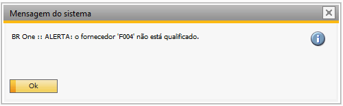
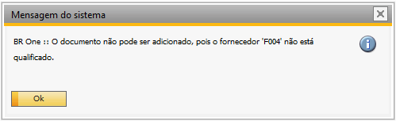
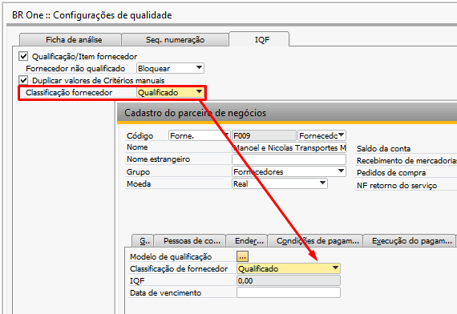

Configurações de Qualidade - Aba IQF
Para acessar as Configurações de qualidade é necessário ir no menu:
Administração -> Definição -> Qualidade -> Configurações de qualidade
Na Aba IQF da tela de configurações de qualidade é realizado a configuração para utilização do módulo de qualidade.

Qualificação/Item fornecedor
Quando marcado, deve ser alertado ou bloqueado quando um fornecedor não qualificado for usado em um documento de compra.
Quando desmarcado, não irá validar se o fornecedor for não qualificado, os documentos de compra serão inseridos sem alerta ou bloqueio.
Fornecedor não qualificado
Esse campo será utilizado de acordo com o campo Classificação de fornecedor do cadastro de PN. Quando estiver classificado como Não qualificado, o fornecedor não poderá ser utilizado no documento de compra, e de acordo com a configuração escolhida, a seguinte ação acontecerá:
ALERTAR: exibe um alerta que o fornecedor não está qualificado e pergunta se deseja continuar.

BLOQUEAR: não permite gerar documentos de compra para os fornecedores não qualificados.

Duplicar valores de Critérios manuais
Quando marcado, ao duplicar a ficha de qualificação os valores de critérios manuais serão levados para nova ficha de qualificação.
Quando desmarcado, ao duplicar a ficha de qualificação os valores de critérios manuais não serão levados para nova ficha de qualificação.
Classificação fornecedor
Este campo por padrão virá como Qualificado sendo assim todos os fornecedores terão esta informação preenchida no campo Classificação de fornecedor da aba qualidade, os novos fornecedores que forem criados ou duplicados terão esta mesma qualificação.
Caso seja alterado para Não qualificado os novos fornecedores ou fornecedores duplicados serão criados com esta informação no campo Classificação de fornecedor.
